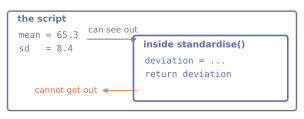

def standardise(value, mean, sd):
"""Return how many standard deviations `value` sits above the mean."""
return (value - mean) / sd
print(standardise(72.0, 65.3, 8.4))0.7976190476190479Python · Unit 5
Why this unit is here
A function gives a piece of work a name, so you can use it in several places and fix it in one.
That is the obvious benefit. The one that matters more for data science is that a named piece of work can be checked. A calculation buried in the middle of a script can only be verified by reading it; the same calculation in a function can be handed known inputs and asked whether it returns the right answer. Every unit after this one leans on that.
You should be able to:
Quick check. What is len("hello"), and what kind of thing is len?
5, and len is a function — you have been using them since P1. print, float, sorted and range are all functions. This unit is about writing your own.
def standardise(value, mean, sd):
"""Return how many standard deviations `value` sits above the mean."""
return (value - mean) / sd
print(standardise(72.0, 65.3, 8.4))0.7976190476190479You need only the arithmetic here: subtract, then divide. The standard deviation itself, a measure of spread, arrives in S2.
Four parts:
def starts a definition, followed by the name.return hands a value back. Without it, a function returns None.The values you pass in at the call site are arguments. Parameters live in the definition; arguments arrive at the call. Keeping the two words apart makes error messages much easier to read.
Names created inside a function are private to it:

deviation does not exist once the function returns.
def standardise(value, mean, sd):
deviation = value - mean
return deviation / sd
print(standardise(72.0, 65.3, 8.4))
print(deviation)0.7976190476190479--------------------------------------------------------------------------- NameError Traceback (most recent call last) Cell In[3], line 7 3 return deviation / sd 6 print(standardise(72.0, 65.3, 8.4)) ----> 7 print(deviation) NameError: name 'deviation' is not defined
deviation was created inside and does not exist outside. That is a feature: a function cannot quietly leave things lying around, so you can use one without knowing how it works inside.
def summarise(values, decimals=2, label="sample"):
mean = sum(values) / len(values)
return f"{label}: n={len(values)}, mean={mean:.{decimals}f}"
scores = [68.4, 55.1, 72.0, 61.3]
print(summarise(scores))
print(summarise(scores, decimals=4))
print(summarise(scores, label="Life sciences"))sample: n=4, mean=64.20
sample: n=4, mean=64.2000
Life sciences: n=4, mean=64.20Parameters with defaults come after those without. At the call site, naming the argument — decimals=4 rather than a bare 4 — makes the line readable and means you can supply them in any order.
Never use a list or dictionary as a default value. It is created once, when the function is defined, and then shared by every call:
def add_reading(value, readings=[]): # do not do this
readings.append(value)
return readings
print(add_reading(1))
print(add_reading(2)) # the list from the first call is still there[1]
[1, 2]Use None as the default and create the list inside:
def add_reading(value, readings=None):
if readings is None:
readings = []
readings.append(value)
return readings
print(add_reading(1))
print(add_reading(2))[1]
[2]A function should be describable in one sentence without using “and”. Compare:
def mean(values):
"""Return the arithmetic mean of a non-empty sequence."""
return sum(values) / len(values)
def usable(values, low=0, high=100):
"""Return only the values inside [low, high]."""
return [v for v in values if low <= v <= high]
raw = [68.4, 187.0, 55.1, 72.0]
print(mean(usable(raw)))65.16666666666667Two small functions, each checkable on its own, beat one that filters and averages and can only be tested as a lump.
assert — a check you leave in the codedef mean(values):
assert len(values) > 0, "mean of an empty sequence is undefined"
return sum(values) / len(values)
print(mean([1, 2, 3]))2.0mean([])--------------------------------------------------------------------------- AssertionError Traceback (most recent call last) Cell In[9], line 1 ----> 1 mean([]) Cell In[8], line 2, in mean(values) 1 def mean(values): ----> 2 assert len(values) > 0, "mean of an empty sequence is undefined" 3 return sum(values) / len(values) AssertionError: mean of an empty sequence is undefined
Without the assertion this raises ZeroDivisionError from the division — sum([]) is 0, and so is len([]) — which tells you what broke but not what you did wrong. With it, the message names the actual mistake.
A module is a file of Python you can use from another file. Import at the top:
import math
import statistics as stats
print(math.sqrt(2))
print(stats.median([68.4, 55.1, 72.0]))1.4142135623730951
68.4import math keeps the origin visible — math.sqrt says where sqrt came from. import statistics as stats shortens a long name; import numpy as np is the same move, and the abbreviations for numpy, pandas and matplotlib are universal conventions worth following exactly.
Avoid from module import *. It pulls every name in, so you cannot tell what came from where, and a later import can silently replace an earlier name. The cost of typing math. is small; the cost of a name collision you cannot see is not.
The standard library is the set of modules that come with Python itself, so they need no installing, unlike numpy or pandas. A short list worth knowing exists: math, statistics, pathlib for file paths, csv, json, random, datetime.
A checked function, used on the cohort.
def summarise_group(scores, low=0, high=100):
"""Summarise a group's scores, reporting what was excluded.
Returns a dictionary with the count kept, the count excluded, the mean and
the sample standard deviation. Raises if nothing usable remains.
"""
usable = [s for s in scores if low <= s <= high]
excluded = len(scores) - len(usable)
if len(usable) < 2:
# raise stops the function with this error, as a failed assert would
raise ValueError(f"need at least 2 usable scores, got {len(usable)}")
mean = sum(usable) / len(usable)
# ** is "to the power of": square each distance from the mean, then add up
variance = sum((s - mean)**2 for s in usable) / (len(usable) - 1)
return {"n": len(usable), "excluded": excluded,
"mean": mean, "sd": variance**0.5} # **0.5 is the square rootCheck it against values you can verify by hand before pointing it at real data:
result = summarise_group([2, 4, 4, 4, 5, 5, 7, 9])
print(result)
assert result["n"] == 8
# abs() drops the sign; 1e-12 is 0.000000000001, so "equal, allowing for rounding"
assert abs(result["mean"] - 5.0) < 1e-12
assert abs(result["sd"] - 2.13809) < 1e-4 # sample sd, n-1 divisor
assert summarise_group([1, 2, 3, 187])["excluded"] == 1
print("all checks passed"){'n': 8, 'excluded': 0, 'mean': 5.0, 'sd': 2.138089935299395}
all checks passedYou can do both by hand. The mean of those eight numbers is 5 by inspection. Their distances from 5 are \(-3, -1, -1, -1, 0, 0, 2, 4\); the squares add to 32; and \(\sqrt{32 / 7} = 2.13809\), dividing by \(n - 1 = 7\) as S8 requires. Now use it:
import csv
from pathlib import Path
rows = list(csv.DictReader(Path("data/cohort.csv").open()))
by_group = {}
for row in rows:
if row["background"] and row["final_score"]:
by_group.setdefault(row["background"], []).append(float(row["final_score"]))
for name in sorted(by_group):
r = summarise_group(by_group[name])
note = f" ({r['excluded']} excluded)" if r["excluded"] else ""
print(f" {name:<24} n={r['n']:>3} mean={r['mean']:5.2f} sd={r['sd']:4.2f}{note}") Computing n= 69 mean=65.85 sd=6.60
Engineering n= 36 mean=67.15 sd=5.33
Life sciences n= 57 mean=60.51 sd=7.29 (1 excluded)
Mathematics or Physics n= 36 mean=75.28 sd=7.63
Social sciences n= 39 mean=60.21 sd=6.58The one excluded value is the impossible score of 187 planted in the file. The function found it, reported it, and did not average it in — because the exclusion rule lives in one place and is tested.
Exercise 1 Write larger(a, b) returning the larger of two numbers, then write three assertions that would catch a wrong implementation — including the equal case.
def larger(a, b):
"""Return the larger of two numbers; either if they are equal."""
return a if a >= b else b
assert larger(3, 7) == 7 # second larger
assert larger(7, 3) == 7 # first larger
assert larger(4, 4) == 4 # equalThe equal case is the one people omit, and it is where a version built from two strict tests — if a > b: return a, then if b > a: return b — matches neither, falls off the end, and returns None. Testing only larger(3, 7) would pass a function that always returns its second argument.
Exercise 2 Why does this print [1, 2] on the second call rather than [2]?
def collect(value, into=[]):
into.append(value)
return into
print(collect(1))
print(collect(2))The default [] is created once, when the def line runs — not on each call. Every call that does not supply into shares that same list, so values accumulate across calls.
The fix:
def collect(value, into=None):
if into is None:
into = []
into.append(value)
return intoThe rule: a default value must be immutable — impossible to change in place. Numbers, strings, True, None and tuples are safe; lists, dictionaries and sets are not.
Exercise 3 This function does three things. Split it, and say what you gain.
def process(rows):
scores = [float(r["final_score"]) for r in rows if r["final_score"]]
valid = [s for s in scores if 0 <= s <= 100]
return sum(valid) / len(valid)def extract_scores(rows):
"""Pull final_score out of rows that have one, as floats."""
return [float(r["final_score"]) for r in rows if r["final_score"]]
def usable(scores, low=0, high=100):
"""Keep only scores inside the plausible range."""
return [s for s in scores if low <= s <= high]
def mean(values):
assert values, "mean of an empty sequence is undefined" # an empty list counts as false
return sum(values) / len(values)Any split into these three jobs — extract, filter, average — answers the exercise; your names may differ. The low and high parameters and the assertion are improvements, not requirements. A good answer to “what you gain” mentions testing each piece separately.
What you gain: each piece can be tested with two lines and no CSV file; the plausible range becomes a visible, changeable parameter rather than a hard-coded 0 and 100 buried three lines deep; and when a mean comes out wrong you can find out which stage was responsible.
What you also gain, less obviously: usable now has a name, so the fact that filtering happened is visible at the call site instead of hidden.
Write the checks before the function is used in anger, on inputs whose answer you already know.
def sample_sd(values):
"""Sample standard deviation, with the n-1 divisor."""
if len(values) < 2:
raise ValueError("need at least two values")
mean = sum(values) / len(values)
return (sum((v - mean)**2 for v in values) / (len(values) - 1))**0.5
import numpy as np
# np.std is numpy's standard deviation; ddof=1 makes it divide by n-1, as ours does
for case in ([2, 4, 4, 4, 5, 5, 7, 9], [1.5, 2.5], [10, 10, 10]):
mine, theirs = sample_sd(case), np.std(case, ddof=1)
print(f"{str(case):<28} {mine:8.5f} vs numpy {theirs:8.5f} "
f"agree: {np.isclose(mine, theirs)}")[2, 4, 4, 4, 5, 5, 7, 9] 2.13809 vs numpy 2.13809 agree: True
[1.5, 2.5] 0.70711 vs numpy 0.70711 agree: True
[10, 10, 10] 0.00000 vs numpy 0.00000 agree: TrueComparing against an independent implementation is the strongest cheap check there is. Note the three cases: an ordinary one, the smallest legal input, and one with no variation at all — ordinary, edge, and degenerate.
And check that it refuses what it should:
try:
sample_sd([5])
except ValueError as error:
print("correctly refused:", error)correctly refused: need at least two valuesA function that fails loudly on bad input is more useful than one that returns a number you cannot trust.
Where this usually goes wrong
def f(x, acc=[]) creates that list once and shares it across all calls. Use None and create it inside.
larger(3, 7) passes for a function that always returns its second argument. Test ordinary, edge and degenerate inputs.
from module import *return gives you None. The exception is a list the function changes in place: readings.append(value) alters the one list both names label, as the default-argument trap above shows.
Answers are at the foot of the page.
What does a function return if it has no return statement?
0None0 is a real value, and Python never invents one. What does Python use to mean ‘nothing here’?
Some languages do that. Python does not — it returns a special value meaning ‘no value’.
A function without return runs perfectly well. What do you get back when you call it?
def f(x, acc=[]) dangerous?larger(a, b) only with larger(2, 9) and it passes. Name an incorrect implementation that would also pass.(b) None. Which is why a function that prints but does not return gives you None if you try to use its result.
A parameter is the name in the definition; an argument is the value supplied at the call. def f(x) declares a parameter; f(3) passes an argument.
The default list is created once at definition time and shared by every call that does not supply one, so values accumulate between unrelated calls.
Any of: the value can be tested; it can be reused in a larger calculation; the caller chooses the formatting; and the function stays usable in a script that should print nothing at all.
def larger(a, b): return b — it returns 9, which is correct for that one case. So would return max(a, b) if a < b else b. Testing the reversed order and the equal case rules both out.